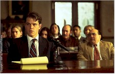

Francis Ford Coppola, Gwyneth Paltrow, Robert Altman, Matt Damon (two films), Pam Grier, Neil Jordan, Claire Danes, Barry Levinson, Brenda Blethyn, the brothers Coen, Anne Heche, Robert De Niro (two films) Stephen Rea, Robin Williams and Samuel L. Jackson are among the currently hot Hollywood players whose recent work – most of which has been on American screens for weeks now – will be featured in the high-profile competition section of the 48th Berlin International Film Festival, which opens Wednesday (11 February) with the European premiere of Jim Sheridan's The Boxer, starring Daniel Day Lewis and Emily Watson.

The festival will show literally hundreds of new films in seven sections (Competition, Forum of New Cinema, Panorama, Market, Retrospectives, Children's Film Festival and New German Films) through 22 February, and although the list of visiting stars is never precisely firm (Paltrow's new film Sliding Doors has already dropped out of the closing night slot, replaced by John Grisham's The Rainmaker), look for a good number of the artists listed above to show up at this huge and immaculately run celebration-cum-endurance test of movies and those who make, star in, market, exhibit and just hang around them.The title of the Children's Film Festival (12 to 21 February) is "Mut ze handeln," which translates as "courage to act," and that's as good a motto as any for the festival as a whole. "Never before were release dates changed so often and never before were so many major films made available to the festival at the very last minute," festival director Moritz de Hadeln said during the 03 February press conference unveiling this year's competition program.
Fourteen world premieres and five first feature films are included in the 29 features set to unspool at the famed Zoo Palast cinema (selected, according to de Hadeln, from more than 600 official submissions). In addition to the Irish The Boxer and the BritishButcher Boy, the Hollywood entries include Good Will Hunting, Jeff Bridges and John Goodman in Joel and Ethan Coen's The Big Lebowski, Jackie Brown, Wag the Dog, The Gingerbread Man, Great Expectations and John Grisham's The Rainmaker (the last three presented out of competition). Other notable entries include the Dutch-Belgian Holocaust drama Left Luggage (actor Jeroen Krabbé's directorial debut), the Japanese animated blockbuster Princess Mononoke (which Miramax will distribute stateside), two new German features (Micheal Gwisdek's Das Mambospiel and George Sluizer's European Community thriller The Commissioner, with John Hurt and Armin Müller-Stahl), two new Australian movies (The Boys and The Sound of One Hand Clapping) and, as has become the norm the last few years, a handful of films from Asia, including actress Joan Chen's directorial debut Xiu Xiu – The Sent-Down Girl (China), Stanley Kwan's Hold You Tight (Hong Kong), Lin Cheng-sheng's incest drama Sweet Degeneration (Taiwan), Nobuhiko Obayashi's Sada (Japan) and the mainland-made short film Butterfly Flying. Veterans returning to the competition include French director Jacques Doillon with Too Much (Little) Love (his fourth appearance), Spanish helmer Vicente Aranda and his The Naked Eye, Barbara by Danish director Nils Malmros and Same Old Song by French auteur Alain Resnais.
Other countries represented include Russia (Valeri Todorovsky's The Land of the Deaf), Great Britain (Nick Hurran's Girls' Night, starring Julie Walters, Brenda Blethyn and Kris Kristofferson, as well as Michael Winterbottom's new film I Want You), Brazil (Walter Salles Jr.'s hotly anticipated Central Station) and even Roman Polanski's 1965 horror classic Repulsion – one of 13 films honoring festival special guest Catherine Deneuve. The eligible films will vie for the Gold and Silver Bears awarded by the festival.
"There is no doubt," de Hadeln went on to say at the last week's press event, "that the festival has an exceptionally good and interesting program in all sections." The Panorama, for instance, run by Wieland Speck, will spotlight 40 feature films, 11 documentaries and 25 short films (subdivided into "Art & Essay," "Documentary," and "Panorama Special" categories), while the New German Cinema program run by Hof Film Festival founder and director Heinz Badewitz will showcase new films from the brightest names in the currently thriving German film industry.
Since 1971 the independently run Forum of Young Cinema (renamed Forum of New Cinema this year to avoid the obvious confusion) has been programmed by Ulrich and Erika Gregor in five cinemas scattered throughout the city. Among the dozens of films that meet the goals of "experimental aesthetics which develop new styles, reflect contemporary issues or find new horizons" in their 28th edition are Michael (Roger and Me) Moore's The Big One, avant-garde director Lynn Hershman's Conceiving Ada, Ron Havilio's mammoth 6-hour Fragments*Jerusalem (a decade in the making) and German favorite Rudolf Thome's Tiger-Stripe Woman Waits for Tarzan, apparently a blending of science fiction and the gentle social satire that is the hallmark of his best work. On an interesting programming note festival representatives travel all over the world meeting with officials and screening potential festival entries, trips that are usually uneventful. But according to an early December festival press release, Forum consultant Peter B. Schumann was arrested by Cuban officials when he deplaned in Havana to attend a festival of new Latin American cinema there. Credited with bringing Strawberry and Chocolate to Berlin a few years ago (where it subsequently won a Silver Bear), Schumann's activities in support of the human rights movement apparently ran him afoul of the current regime. He was detained, charged with violating a two year immigration ban (the existence of which was news to him) and deported back to Berlin. No new word on the upshot of this, as the festival awaits a demand sent to the Cuban Film Institute that the ban be lifted.
The Children's Film Festival, curated by Renate Zylla, consists of nine features and 11 shorts from around the world, loosely grouped under the aforementioned heading of "Courage to Act" ("unusual situations requiring courage," says the press release). The generally more kid-friendly Scandinavian countries have three features – including Danish director Lone Scherfig's opening night movie On Our Own... – while Canada has two films, John Hurt stars in Bob Swaim's American production The Climb and features are booked representing Japan and Bulgaria.
In addition to the program honoring Deneuve, there's a substantial Historical Retrospective sidebar, conceived by Wolfgang Jacobsen and organized by the Stiftung Deutsche Kinemathek, that this year will explore the significant contributions to German, French and Hollywood cinema of brothers Robert (director) and Curt (screenwriter) Siodmak. The former distinguished himself in the filmnoir genre during the 1940s with such films as The Spiral Staircase (1945), The Killers (1946) and Criss Cross (1948), while the latter – who will attend the festivities – wrote The Invisible Man Returns (1939), The Wolf Man (1941), I Walked with a Zombie (1943), Son of Dracula (1943 – which he also directed), The Beast with Five Fingers (1946) and the novel "Donovan's Brain," which inspired no less than three genre films.
The entire festival is set against the backdrop of massive change in Berlin, as the gargantuan Potsdamer Platz development begins to take shape. Festival organizers have met continuously throughout the year with city officials to plan the big move in the year 2000, when the cramped but cozy festival center in what used to be the heart of Cold War-era Berlin gives way to new digs in the shadow of the Brandenburg Gate.
In the meantime, periodic dispatches will report on comings, goings and related shenanigans in Berlin, as well as individual film reviews, acquisition news and unsubstantiated gossip. Sure, it takes courage to jump into such a celluloid fray, but to be honest it isn't the worst assignment in the world. And thanks to the legendary German penchant for organization and a fierce love of the politics of film unequaled on the international festival calendar, the 1998 edition promises to live up to it's deserved reputation.